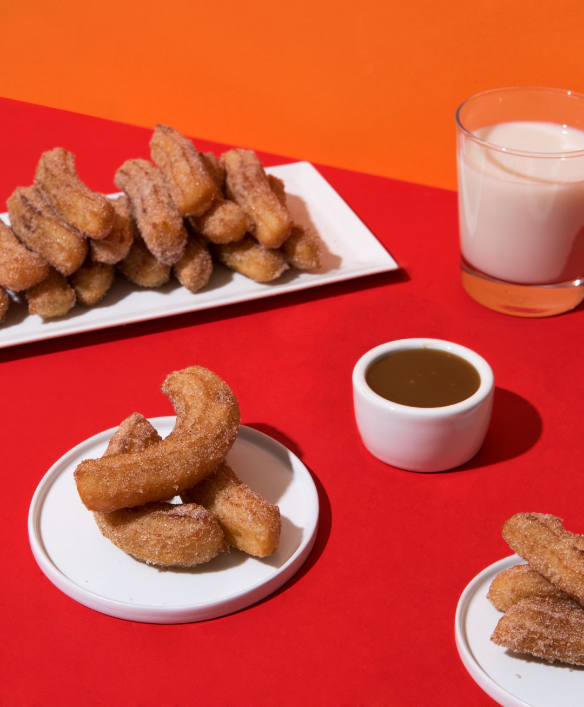

Vegan Churros with a Salted Caramel Sauce

Description
Today we’re pairing these Churros with a Vegan Salted Caramel dipping sauce because when I was visualizing what I wanted to do with the churros, I could not stop smelling cajeta.
I kept picturing myself walking around El Jardín de la Villa being enveloped by the aroma of tacos de adobada, hot cakes with cajeta sizzling over a hot skillet, and the smell of dough being deep fried and being tossed around in sweet sugar and cinnamon.
Ingredients
Churros
- 2 cups water
- 1 cup sugar + 2 tablespoons/li>
- 1/2 teaspoon salt
- 1/2 teaspoon vanilla extract/li>
- 4-6 cups vegetable oil, divided
- 2 cups all-purpose flour
- 4 tablespoons ground cinnamon
Sauce
- 14 oz can full fat coconut milk
- 1 cup light brown sugar
- pinch of sea salt
- 1/2 teaspoon vanilla
Steps
Churros
- In a medium saucepan on medium heat, combine the water, 1 cup of sugar, salt, vanilla, and two tablespoons of vegetable oil. Bring to a boil and remove from the heat./li>
- Add the flour and stir with a wooden spoon, making sure all of the flour is completely mixed in. Allow for the dough to cool for about 15 minutes.Add the flour and stir with a wooden spoon, making sure all of the flour is completely mixed in. Allow for the dough to cool for about 15 minutes.
- Transfer your dough into a large piping bag with a large star tip on it and place it in the fridge to cool for an extra 30 minutes.
- In a large pot, bring the rest of the vegetable oil to 350 degrees (adjust the amount of oil depending on the size of your pot), using a thermometer. Adjust the heat to keep the oil at a constant temperature during frying
- Pipe 4 inch long churros into the oil very carefully, and fry for about 4-5 minutes until they are crispy and golden brown.
- Using a slotted spoon, remove the churros from the oil and let them drain on paper towels.
- Combine the remaining two tablespoons of sugar with the cinnamon in a large bowl. Toss the churros around the bow to coat.
- Serve with a side of the dipping sauce.
Dipping Sauce
- Refrigerate the can of coconut milk for at least a couple hours to firm up the cream and help it separate from the water.
- Once it’s firmed up scoop out 1 cup of the cream* and add it to a medium sized saucepan with the brown sugar and salt and bring to a boil over medium heat, whisking occasionally, then boil for 5 minutes still whisking occasionally to make sure nothing burns. Turn off the heat, whisk in the vanilla, and let the sauce cool before serving.
- *All cans of coconut milk are different so you might not get a full cup but that’s cool, just adjust the brown sugar to match whatever amount you get